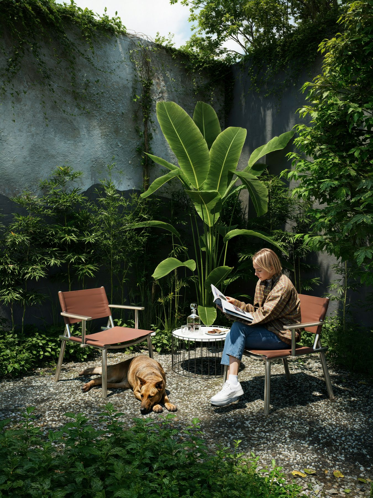

Accountable
One named lead, clear responsibilities and no disappearing between stages.
Blossom was created for homeowners who want the garden taken seriously as part of the property, without having to manage every specialist, supplier and decision themselves.
Designers design. Gardeners maintain. Landscapers build. Arborists, electricians, pool companies and building suppliers solve their own specialist part. The gaps between them are where decisions drift, costs hide and responsibility becomes unclear.
Blossom closes those gaps. It gives the garden a single point of responsibility that can see the whole property, organise the right expertise and stay involved from the first requirement through to long-term care.
Damian is a designer and project leader with more than 30 years of experience turning complex ideas into delivered outcomes for large organisations and global real-estate environments.
His background spans industrial design, product and service development, materials, technology, property and the leadership of substantial, multi-disciplinary programmes. The common thread is making many moving parts work as one: understanding the real requirement, establishing a strong design direction and then managing people, money, decisions and quality through to completion.
Blossom brings that experience into the garden. It combines Damian's lifelong interest in design, materials and nature with the commercial discipline required to run projects on time, keep budgets visible and hold quality at the centre of every decision.
The ambition is simple: homeowners should be able to improve and manage the garden without becoming its unpaid project manager.
One named lead, clear responsibilities and no disappearing between stages.
The right intervention for the property, rather than selling the largest available project.
Defined fees, visible decisions and disclosed commercial arrangements.
Recommendations based on the client's requirement, quality, value and fit.
Beautiful ideas resolved against maintenance, access, programme, budget and delivery.
Blossom builds relationships with garden designers, landscape contractors, gardeners, arborists, surveyors, engineers, planning advisers, building suppliers, craftspeople and technical specialists across the region.
Partners remain responsible for their professional and trade-specific work. Blossom makes sure their contribution answers the same brief and supports the same finished result.
